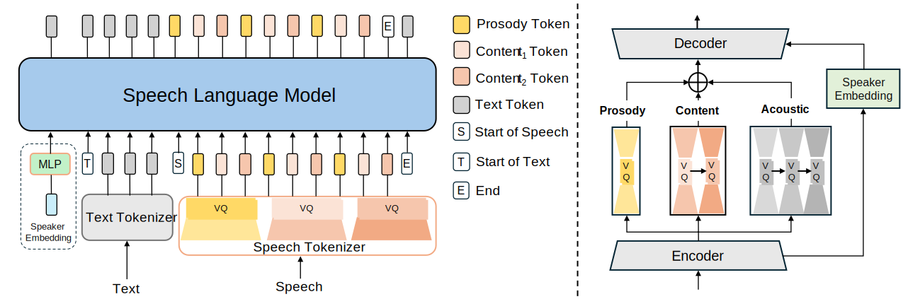
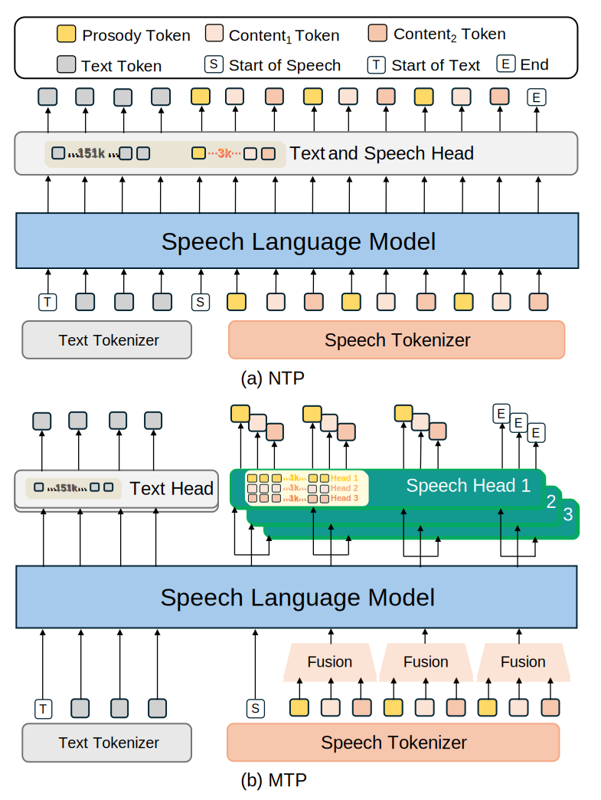
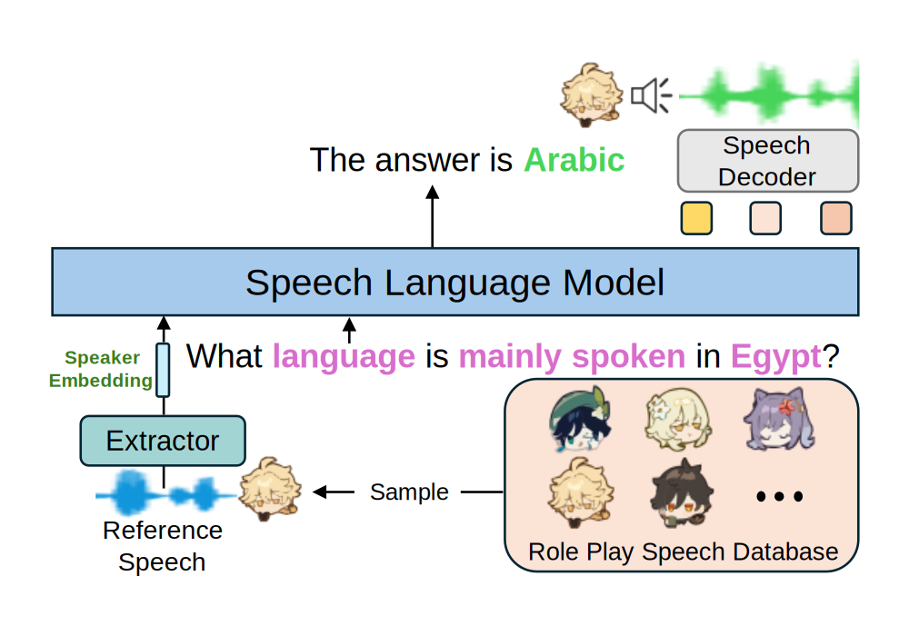

Speech-Language Models with Decoupled Tokenizers and Multi-Token Prediction
Xiaoran Fan1*,
Zhichao Sun1*,
Yangfan Gao1*,
Jingfei Xiong1*,
Hang Yan2*,
Yifei Cao1,
Jiajun Sun1,
Shuo Li1,
Zhihao Zhang1,
Zhiheng Xi1,
Yuhao Zhou1,
Senjie Jin1,
Changhao Jiang1,
Junjie Ye1,
Ming Zhang1,
Rui Zheng1,
Zhenhua Han,
Yunke Zhang3,
Demei Yan3,
Shaokang Dong3,
Tao Ji1†,
Tao Gui1†,
Qi Zhang1†,
Xuanjing Huang1†
1Fudan University,
2The Chinese University of Hong Kong,
3Honor Device Co., Ltd
*Equal contribution,
†Corresponding author
Abstract Speech-language models (SLMs) offer a promising path toward unifying speech and text understanding and generation. However, challenges remain in achieving effective cross-modal alignment and high-quality speech generation. In this work, we systematically investigate the impact of key components (i.e., speech tokenizers, speech heads, and speaker modeling) on the performance of LLM-centric SLMs. We compare coupled, semi-decoupled, and fully decoupled speech tokenizers under a fair SLM framework and find that decoupled tokenization significantly improves alignment and synthesis quality. To address the information density mismatch between speech and text, we introduce multi-token prediction (MTP) into SLMs, enabling each hidden state to decode multiple speech tokens. This leads to up to 12× faster decoding and a substantial drop in Word Error Rate (from 6.07 to 3.01). Furthermore, we propose a speaker-aware generation paradigm and introduce RoleTriviaQA, a large-scale role-playing knowledge QA benchmark with diverse speaker identities. Experiments demonstrate that our methods enhance both knowledge understanding and speaker consistency.
Contents
- Overview
- SLMs Trained with Different Speech Tokenizers
- NTP vs. MTP & Speaker-Aware TTS
- Role-Playing Knowledge QA
This page is for research demonstration purposes only.
Overview

Figure 1: Left: Overview of a Speech Language Model (SLM) trained with decoupled speech tokenizer (Section 2.1) and Speaker-Aware TTS; Right: The architecture of a possible decoupled speech tokenizer, featuring speech quantization, reconstruction in a decoupled manner and speaker-specified embedding extraction.

Figure 2: Illustration of our NTP and MTP architecture. (a) NTP: single vocabulary and single prediction head; (b) MTP: multiple vocabularies and multiple prediction heads, generating multiple tokens in parallel.

Figure 3: Illustration of Role-Playing Knowledge QA.
SLMs Trained with Different Speech Tokenizers
Comparison of SLMs trained with different kinds of speech tokenizers (Coupled, Semi-decoupled, Decoupled).
| Decoupled Tokenizer | Semi-Decoupled Tokenizer | Coupled Tokenizer | |||||||
|---|---|---|---|---|---|---|---|---|---|
| Text | FACodec-NTP | SpeechTokenizer-5L | SpeechTokenizer-8L | Encodec-4L | Encodec-8L | WavTokenizer-v2 | StableCodec | BigCodec | |
| Good cases | "It is a very delicate question," said he. |
WER: 0.0 UTMOS: 4.33 |
WER: 0.0 UTMOS: 3.51 |
WER: 12.5 UTMOS: 4.17 |
Failed* |
Failed |
WER: 0.0 UTMOS: 4.05 |
WER: 12.5 UTMOS: 3.68 |
WER: 0.0 UTMOS: 4.46 |
| In the distance the clouds resemble great bales of cotton, piled up in picturesque disorder. |
WER: 0.0 UTMOS: 4.47 |
WER: 6.67 UTMOS: 4.18 |
WER: 15.4 UTMOS: 3.77 |
Failed |
Failed |
WER: 40.0 UTMOS: 4.05 |
WER: 6.67 UTMOS: 4.46 |
WER: 6.67 UTMOS: 3.75 |
|
| It was kind of you to spend so much time in our behalf. |
WER: 0.0 UTMOS: 4.45 |
WER: 13.3 UTMOS: 4.30 |
WER: 0.0 UTMOS: 4.29 |
WER: 7.7 UTMOS: 3.04 |
WER: 15.4 UTMOS: 2.82 |
WER: 87.7 UTMOS: 4.41 |
WER: 0.0 UTMOS: 4.39 |
WER: 7.7 UTMOS: 4.34 |
|
| Bad case | This new plant takes high tension polyphase current from a water power thirty or forty miles away at Paderno, on the river Adda, flowing from the Apennines; but delivers low tension direct current for distribution to the regular Edison three wire system throughout Milan. |
WER: 29.5 UTMOS: 3.36 |
WER: 31.8 UTMOS: 3.82 |
Failed |
Failed |
Failed |
Failed |
WER: 25.0 UTMOS: 2.90 |
Failed |
* Failed indicates that SLMs failed to predict the "end of speech" token.
NTP vs. MTP & Speaker-Aware TTS
Comparing Next-Token Prediction (NTP) and Multi-Token Prediction (MTP) for TTS on SLMs using decoupled tokenizers*, w/ and w/o Speaker-Aware paradigm.
| NTP | MTP-3H | MTP-6H | MTP-12H | |||||||
|---|---|---|---|---|---|---|---|---|---|---|
| Text | Prompt | w/o Speaker-Aware | w/ Speaker-Aware | w/o Speaker-Aware | w/ Speaker-Aware | w/o Speaker-Aware | w/ Speaker-Aware | w/o Speaker-Aware | w/ Speaker-Aware | |
| Good cases | "Yes," replied my uncle, "and there is a sea lizard of vast size. |
WER: 0.0 UTMOS: 4.19 SIM: 0.51 |
WER: 0.0 UTMOS: 4.34 SIM: 0.54 |
WER: 0.0 UTMOS: 4.17 SIM: 0.45 |
WER: 0.0 UTMOS: 4.20 SIM: 0.53 |
WER: 0.0 UTMOS: 4.03 SIM: 0.49 |
WER: 0.0 UTMOS: 3.93 SIM: 0.59 |
WER: 0.0 UTMOS: 4.29 SIM: 0.56 |
WER: 0.0 UTMOS: 4.36 SIM: 0.59 |
|
| I don't drink it myself, but I like to see it behave when it's poured. |
WER: 0.0 UTMOS: 3.73 SIM: 0.47 |
WER: 0.0 UTMOS: 3.85 SIM: 0.69 |
WER: 0.0 UTMOS: 4.37 SIM: 0.55 |
WER: 0.0 UTMOS: 4.38 SIM: 0.61 |
WER: 0.0 UTMOS: 4.22 SIM: 0.55 |
WER: 0.0 UTMOS: 4.36 SIM: 0.64 |
WER: 0.0 UTMOS: 4.10 SIM: 0.32 |
WER: 0.0 UTMOS: 4.12 SIM: 0.60 |
||
| After the station had been running several months and was technically a success, we began to look after the financial part. |
WER: 0.0 UTMOS: 4.45 SIM: 0.50 |
WER: 0.0 UTMOS: 4.46 SIM: 0.67 |
WER: 0.0 UTMOS: 4.31 SIM: 0.56 |
WER: 0.0 UTMOS: 4.41 SIM: 0.71 |
WER: 0.0 UTMOS: 3.78 SIM: 0.60 |
WER: 0.0 UTMOS: 4.44 SIM: 0.71 |
WER: 0.0 UTMOS: 4.07 SIM: 0.51 |
WER: 0.0 UTMOS: 4.40 SIM: 0.64 |
||
| Bad case | Sheriff Jones made several visits unmolested on their part, and without any display of writs or demand for the surrender of alleged offenders on his own. |
WER: 15.3 UTMOS: 4.32 SIM: 0.32 |
WER: 15.3 UTMOS: 3.75 SIM: 0.53 |
WER: 26.9 UTMOS: 4.04 SIM: 0.28 |
WER: 23.1 UTMOS: 3.73 SIM: 0.55 |
WER: 0.0 UTMOS: 3.66 SIM: 0.45 |
WER: 7.69 UTMOS: 3.87 SIM: 0.45 |
WER: 3.84 UTMOS: 3.62 SIM: 0.50 |
WER: 0.0 UTMOS: 4.23 SIM: 0.64 |
|
* We chose FACodec as a decoupled tokenizer to conduct experiments on different settings above.
Role-Playing Knowledge QA
Comparison of SLMs with Top-3 Coupled, Semi-Decoupled and Decoupled speech tokenizers on Role-Playing Knowledge QA task.
Roles are selected from Genshin Impact.
| Decoupled Tokenizer | Semi-decoupled Tokenizer | Coupled Tokenizer | |||||||
|---|---|---|---|---|---|---|---|---|---|
| Sample Type | Question | Ground Truth |
Prompt | FACodec | SpeechTokenizer | WavTokenizer-v2 | BigCodec | StableCodec | |
| Good cases | In-Domain Question & Seen role |
How many imperial gallons are in a firkin? | The answer is 9 |
Role: Xiao |
Text answer
The answer is nine* Speech answer SIM: 0.75 |
Text answer
The answer is one hundred** Speech answer SIM: 0.13 |
Text answer
The answer is four Speech answer SIM: 0.49 |
Text answer
The answer is five Speech answer SIM: 0.21 |
Text answer
The answer is two Speech answer SIM: 0.27 |
| Out-of-Domain Question & Seen role |
What style of art did Henri Matisse do? | The answer is impressionism |
Role: Arataki Itto |
Text answer
The answer is impressionism Speech answer SIM: 0.75 |
Text answer
The answer is impressionism in media*** Speech answer SIM: 0.12 |
Text answer
The answer is fauvisme Speech answer SIM: 0.22 |
Text answer
The answer is impressionism in sculpture Speech answer SIM: 0.23 |
Text answer
The answer is impressionist Speech answer SIM: 0.07 |
|
| In-Domain Question & Unseen role |
Which golf shot is the opposite of a slice? | The answer is hook |
Role: Eula |
Text answer
The answer is hook Speech answer SIM: 0.71 |
Text answer
The answer is morris Speech answer SIM: -0.02 |
Text answer
The answer is condor yacht Speech answer SIM: 0.21 |
Text answer
The answer is tiddliwinks Speech answer SIM: 0.35 |
Text answer
The answer is cutty sall Speech answer SIM: 0.23 |
|
| Out-of-Domain Question & Unseen role |
What is the largest city in Spain? | The answer is Madrid |
Role: Jean |
Text answer
The answer is madrid Speech answer SIM: 0.60 |
Text answer
The answer is jorvili Speech answer SIM: 0.10 |
Text answer
The answer is un locode itvce Speech answer SIM: 0.19 |
Text answer
The answer is castro Speech answer SIM: 0.07 |
Text answer
The answer is un locode dehaj Speech answer SIM: 0.19 |
|
| Bad case | In-Domain Question & Unseen role |
Satya Nadella, boss of which vast corporation, apologised in 2014 for suggesting female workers should rely on faith and karma instead of asking for a pay rise? | The answer is Microsoft |
Role: Albedo |
Text answer
The answer is microsoft Speech answer SIM: 0.57 |
Text answer
The answer is microsoft inc Speech answer SIM: -0.05 |
Text answer
The answer is reds Speech answer SIM: 0.08 |
Text answer
The answer is nike Speech answer SIM: -0.03 |
Text answer
The answer is nikkei Speech answer SIM: 0.30 |
** Wrong answer
*** Partially correct answer